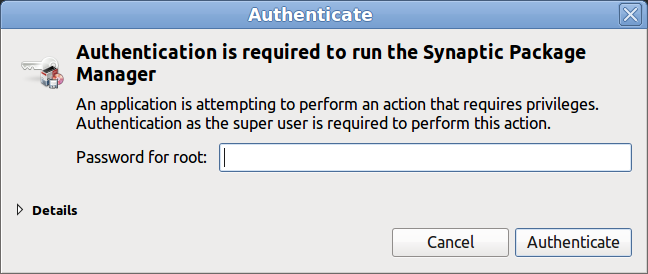

Здесь "отключить" означает настроить PolicyKit таким образом, чтобы с его помощью нельзя было
выполнять административные задачи. Например, удалять пакеты посредством Synaptic (команда
synaptic-pkexec) или форматировать диски с помощью GParted (команда
gparted-pkexec). Но при этом должна остаться возможность выключать компьютер,
менять настройки сетевых подключений и выполнять другие действия, для которых по умолчанию
никакие пароли не требуются.
Удалить PolicyKit в Linux Mint нельзя (от него зависит пакет cinnamon и многие
другие). Но, даже если бы PolicyKit можно было удалить, появилась бы куча проблем: разрешения на
выключение компьютера и прочие действия пришлось бы настраивать заново (или с помощью SUID
битов, или допиливанием PAM, или каким-нибудь другим образом, ведь старые дистрибутивы
обходились без PolicyKit, когда его еще не было).
У PolicyKit есть "действия", "правила" и т.д. Каждому такому понятию соответствуют свои конфиги.
Например, для "действий" есть /usr/share/polkit-1/actions/. Казалось бы, достаточно
удалить ненужные файлы. Но они могут создаваться при установке программ (тот же GParted) и при
обновлении дистрибутива. Кроме того, с первого раза не так просто разобраться в этом ворохе
конфигов. Для "правил" есть /usr/share/polkit-1/rules.d/, но и там темный лес.
А вот конфиги в /etc - именно то, что нужно
[1]. Итак:
sudo addgroup mypolkit
/etc/polkit-1/localauthority.conf.d/51-ubuntu-admin.conf
(в нем нет предупреждений вроде DO NOT EDIT THIS FILE, it will be overwritten
on update.). Не забываем предварительно сделать его бэкап, но только не в
этот же каталог, а в другой, например, /backups, иначе файл-бэкап
может быть воспринят как еще один конфиг. Отредактированный конфиг должен
выглядеть так:
[Configuration] AdminIdentities=unix-group:mypolkit
В итоге PolicyKit будет запрашивать пароль не вызвавшего его пользователя, а пароль root. Но, поскольку пользователя root в Ubuntu (а следовательно, и в Linux Mint) нет, то, какой пароль ни вводи, он не подойдет [2] [3].

⎯⎯⎯⎯⎯
↑
Для большей уверенности можно удалить конфиг
/etc/pam.d/polkit-1. Но, как выяснилось,
наличие/отсутствие этого конфига не влияет на запрашиваемый
PolicyKit пароль. Так что лучше оставить.
↑
После описанных выше манипуляций нельзя будет изменить системное время
из апплета на панели задач. Но это не проблема: запускаем
gksudo cinnamon-settings и меняем что угодно (правда, тут
надо быть осторожным, чтобы не испортить другие настройки).
↑ Если в системе все-таки есть пользователь root (т.е. если он был добавлен вручную), нужно установить для него сложный (лучше - "невзламываемый", длиной около 50 случайных символов) пароль.